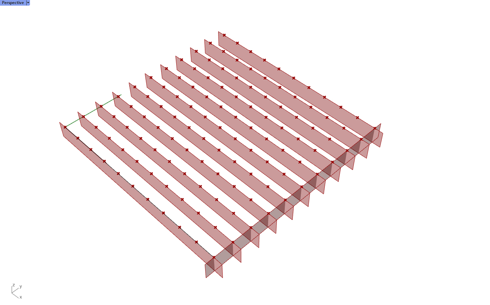
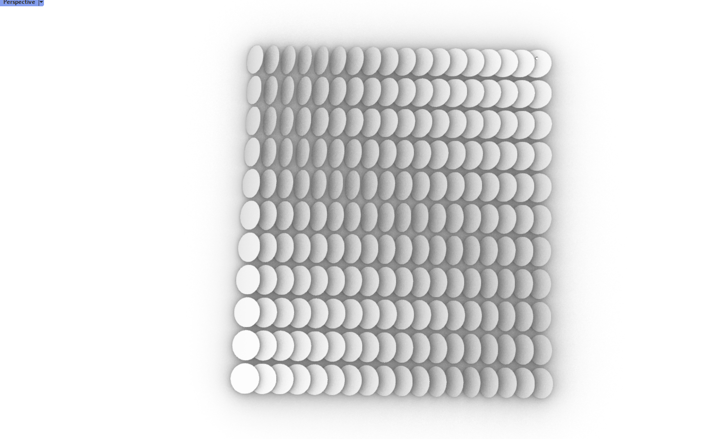
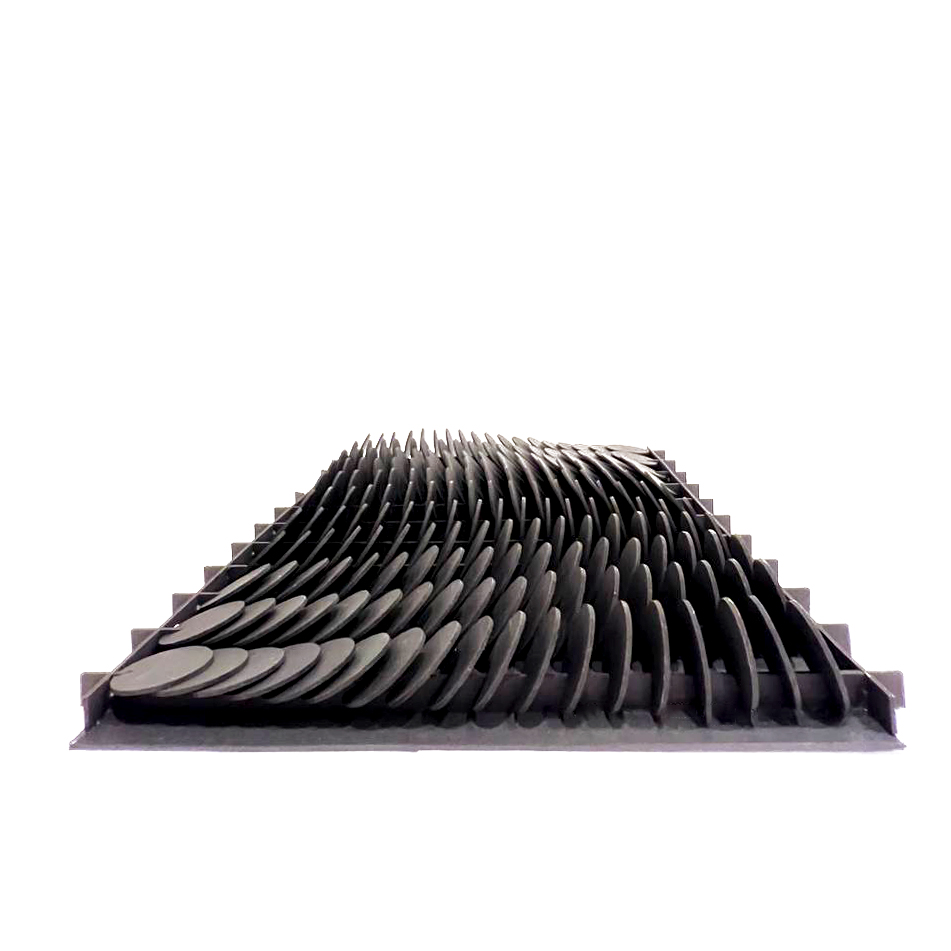

A02: Grasshopper!
Assignemnt Files:
In this instance, our objective was to create a grasshopper definition that would allow us to modify the proposed final shape parametrically.
In this case, I am grabbing a reference from these wave-like sculptures and architectural details that are more ubiquous lately. They seem to follow a direction of movement.
For this purpose, we will create a squared shape to be hanged on a wall. All values will be parametrized, before baking. Only the arranging of the pieces for laser cutting will be manual as last step in the process.
1. We begin by creating a rectangle, selecting one of its sides and dividing it in a specific number of points, in this case 10. We evaluate the isocurves involved in a referenced plane of the rectangle at each of the points, and extrude them down toe create the ribs.
2.We divide those curves into a new number of points, these will be the individual pieces spread throughout the surface.

3. Create teh cutting shape that will be enabling the shapes to be inserted in the ribs. We make sure to add a circle slightly larger than the rectangle's width, to allow easy insertion of the pieces into the cardboard.
4. Then we evaluate each of the ribs at the intersection point, and orient one of these modules in that location.
5.The next step was the most challenging one. In order to rotate the modules, we need to define a leading parameter that might make them different from each other. In this case, we want to do it by distance. We create a curve that goes through the middle, and the shapes will rotate depending of their proximity, by a factor of the longest distance to the curve.
(In the 3D renderings below, I temporarily replaced the splitting shape for the final circles to be cut, in order to visualize how would each iteration look)

6. However, this was not the effect I had wished for, I wanted this to look more like a spike, rather than a "wave". Hence, when the shapes cross the curve, they should still be aligned in direction of the curve. We solved this by evaluating which point is furthest in the X axis (the curve's closest point, or the projecting point) and multiplying its rotation by -1 if the curve was on its left, rather than its right side.

7.After achieving the right rotations, we use intersect to remove the insertion shape from each of the ribs. And with this, the piece is ready for laser cutting and ensamblage.
8. Most of this process of arranging in the sheet is done by hand, including crafting a final module shape that we are interested in. These sheet fit inside a 20" x 11.5" laser cutting machine.
9. At the last minute, I made the circles slightly oval-shaped to accentuate their flow. Here are the end results.
